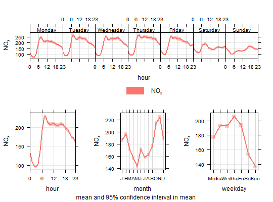

Plots the diurnal, day of the week and monthly variation for different variables, typically pollutant concentrations. Four separate plots are produced.
timeVariation(mydata, pollutant = "nox", local.tz = NULL, normalise = FALSE, xlab = c("hour", "hour", "month", "weekday"), name.pol = pollutant, type = "default", group = NULL, difference = FALSE, statistic = "mean", conf.int = 0.95, B = 100, ci = TRUE, cols = "hue", ref.y = NULL, key = NULL, key.columns = 1, start.day = 1, auto.text = TRUE, alpha = 0.4, ...)
| mydata | A data frame of hourly (or higher temporal resolution data).
Must include a |
|---|---|
| pollutant | Name of variable to plot. Two or more pollutants can be
plotted, in which case a form like |
| local.tz | Should the results be calculated in local time
that includes a treatment of daylight savings time (DST)? The
default is not to consider DST issues, provided the data were
imported without a DST offset. Emissions activity tends to occur
at local time e.g. rush hour is at 8 am every day. When the clocks
go forward in spring, the emissions are effectively released into
the atmosphere typically 1 hour earlier during the summertime
i.e. when DST applies. When plotting diurnal profiles, this has
the effect of “smearing-out” the concentrations. Sometimes,
a useful approach is to express time as local time. This
correction tends to produce better-defined diurnal profiles of
concentration (or other variables) and allows a better comparison
to be made with emissions/activity data. If set to |
| normalise | Should variables be normalised? The default is
|
| xlab | x-axis label; one for each sub-plot. |
| name.pol | Names to be given to the pollutant(s). This is useful if you want to give a fuller description of the variables, maybe also including subscripts etc. |
| type |
It is also possible to choose Only one |
| group | This sets the grouping variable to be used. For example, if a
data frame had a column |
| difference | If two pollutants are chosen then setting
|
| statistic | Can be “mean” (default) or
“median”. If the statistic is ‘mean’ then the mean
line and the 95% confidence interval in the mean are plotted by
default. If the statistic is ‘median’ then the median line
is plotted together with the 5/95 and 25/75th quantiles are
plotted. Users can control the confidence intervals with
|
| conf.int | The confidence intervals to be plotted. If
|
| B | Number of bootstrap replicates to use. Can be useful to reduce this value when there are a large number of observations available to increase the speed of the calculations without affecting the 95% confidence interval calculations by much. |
| ci | Should confidence intervals be shown? The default is |
| cols | Colours to be used for plotting. Options include
“default”, “increment”, “heat”, “jet”
and |
| ref.y | A list with details of the horizontal lines to be
added representing reference line(s). For example, |
| key | By default |
| key.columns | Number of columns to be used in the key. With many
pollutants a single column can make to key too wide. The user can thus
choose to use several columns by setting |
| start.day | What day of the week should the plots start on?
The user can change the start day by supplying an integer between
0 and 6. Sunday = 0, Monday = 1, … For example to start the
weekday plots on a Saturday, choose |
| auto.text | Either |
| alpha | The alpha transparency used for plotting confidence intervals. 0 is fully transparent and 1 is opaque. The default is 0.4 |
| ... | Other graphical parameters passed onto |
As well as generating the plot itself, timeVariation also
returns an object of class ``openair''. The object includes three main
components: call, the command used to generate the plot;
data, the data used to make the four components of the plot (or
subplots); and plot, the associated subplots. If retained, e.g.
using output <- timeVariation(mydata, "nox"), this output can be
used to recover the data, reproduce or rework the original plot or
undertake further analysis.
An openair output can be manipulated using a number of generic operations,
including print, plot and summary.
The four components of timeVariation are: day.hour, hour,
day and month. Associated data.frames can be extracted
directly using the subset option, e.g. as in plot(object,
subset = "day.hour"), summary(output, subset = "hour"), etc, for
output <- timeVariation(mydata, "nox")
The variation of pollutant concentrations by hour of the day and day of the week etc. can reveal many interesting features that relate to source types and meteorology. For traffic sources, there are often important differences in the way vehicles vary by vehicles type e.g. less heavy vehicles at weekends.
The timeVariation function makes it easy to see how
concentrations (and many other variable types) vary by hour of the
day and day of the week.
The plots also show the 95% confidence intervals in the mean. The 95% confidence intervals in the mean are calculated through bootstrap simulations, which will provide more robust estimates of the confidence intervals (particularly when there are relatively few data).
The function can handle multiple pollutants and uses the flexible
type option to provide separate panels for each 'type' ---
see cutData for more details. timeVariation can also
accept a group option which is useful if data are
stacked. This will work in a similar way to having multiple
pollutants in separate columns.
The user can supply their own ylim e.g. ylim = c(0,
200) that will be used for all plots. ylim can also be a
list of length four to control the y-limits on each individual
plot e.g. ylim = list(c(-100,500), c(200, 300), c(-400,400),
c(50,70)). These pairs correspond to the hour, weekday, month and
day-hour plots respectively.
The option difference will calculate the difference in
means of two pollutants together with bootstrap estimates of the
95% confidence intervals in the difference in the mean. This works
in two ways: either two pollutants are supplied in separate
columns e.g. pollutant = c("no2", "o3"), or there are two
unique values of group. The difference is calculated as the
second pollutant minus the first and is labelled as
such. Considering differences in this way can provide many useful
insights and is particularly useful for model evaluation when
information is needed about where a model differs from
observations by many different time scales. The manual contains
various examples of using difference = TRUE.
Note also that the timeVariation function works well on a
subset of data and in conjunction with other plots. For example, a
polarPlot may highlight an interesting feature for a
particular wind speed/direction range. By filtering for those
conditions timeVariation can help determine whether the
temporal variation of that feature differs from other features ---
and help with source identification.
In addition, timeVariation will work well with other variables if
available. Examples include meteorological and traffic flow data.
Depending on the choice of statistic, a subheading is added. Users
can control the text in the subheading through the use of
sub e.g. sub = "" will remove any subheading.
# basic use timeVariation(mydata, pollutant = "nox")# for a subset of conditions not_run({ timeVariation(subset(mydata, ws > 3 & wd > 100 & wd < 270), pollutant = "pm10", ylab = "pm10 (ug/m3)") }) # multiple pollutants with concentrations normalised ## Not run: timeVariation(mydata, pollutant = c("nox", "co"), normalise = TRUE) # show BST/GMT variation (see ?cutData for more details) # the NOx plot shows the profiles are very similar when expressed in # local time, showing that the profile is dominated by a local source # that varies by local time and not by GMT i.e. road vehicle emissions ## Not run: timeVariation(mydata, pollutant = "nox", type = "dst", local.tz = "Europe/London") ## In this case it is better to group the results for clarity: ## Not run: timeVariation(mydata, pollutant = "nox", group = "dst", local.tz = "Europe/London") # By contrast, a variable such as wind speed shows a clear shift when # expressed in local time. These two plots can help show whether the # variation is dominated by man-made influences or natural processes ## Not run: timeVariation(mydata, pollutant = "ws", group = "dst", local.tz = "Europe/London") ## It is also possible to plot several variables and set type. For ## example, consider the NOx and NO2 split by levels of O3: ## Not run: timeVariation(mydata, pollutant = c("nox", "no2"), type = "o3", normalise = TRUE) ## difference in concentrations ## Not run: timeVariation(mydata, poll= c("pm25", "pm10"), difference = TRUE) # It is also useful to consider how concentrations vary by # considering two different periods e.g. in intervention # analysis. In the following plot NO2 has clearly increased but much # less so at weekends - perhaps suggesting vehicles other than cars # are important because flows of cars are approximately invariant by # day of the week not_run({ mydata <- splitByDate(mydata, dates= "1/1/2003", labels = c("before Jan. 2003", "After Jan. 2003")) timeVariation(mydata, pollutant = "no2", group = "split.by", difference = TRUE) }) ## sub plots can be extracted from the openair object not_run({ myplot <- timeVariation(mydata, pollutant = "no2") plot(myplot, subset = "day.hour") # top weekday and plot }) ## individual plots ## plot(myplot, subset="day.hour") for the weekday and hours subplot (top) ## plot(myplot, subset="hour") for the diurnal plot ## plot(myplot, subset="day") for the weekday plot ## plot(myplot, subset="month") for the monthly plot ## numerical results (mean, lower/upper uncertainties) ## results(myplot, subset = "day.hour") # the weekday and hour data set ## summary(myplot, subset = "hour") #summary of hour data set ## head(myplot, subset = "day") #head/top of day data set ## tail(myplot, subset = "month") #tail/top of month data set ## plot quantiles and median not_run({ timeVariation(mydata, stati="median", poll="pm10", col = "firebrick") ## with different intervals timeVariation(mydata, stati="median", poll="pm10", conf.int = c(0.75, 0.99), col = "firebrick") })